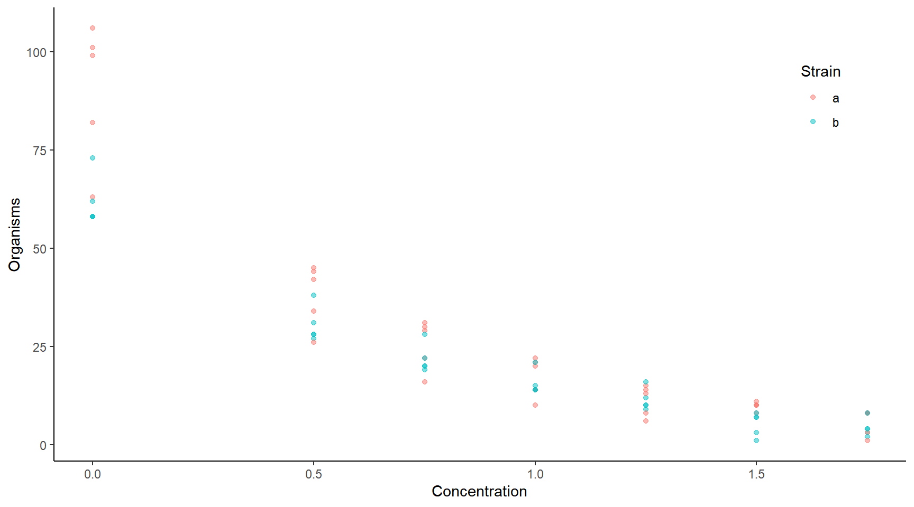
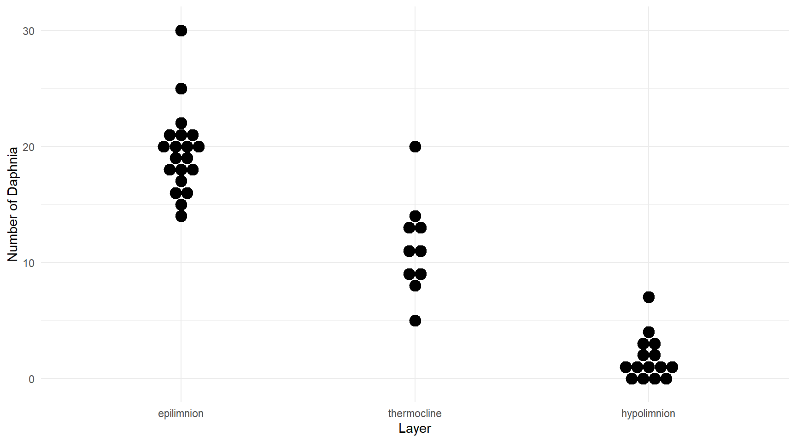
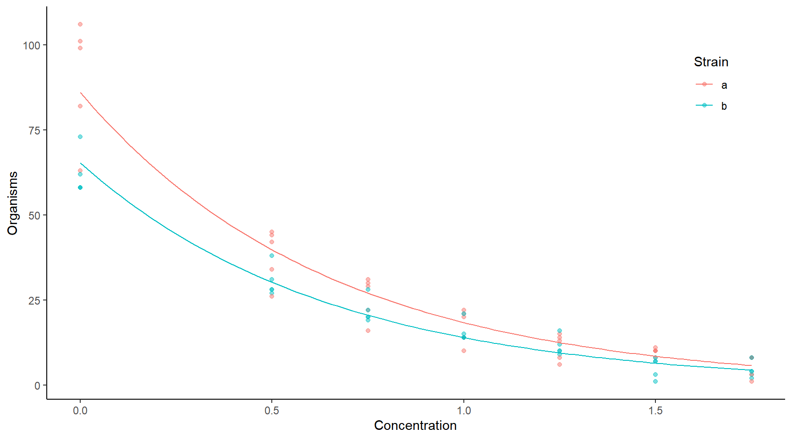
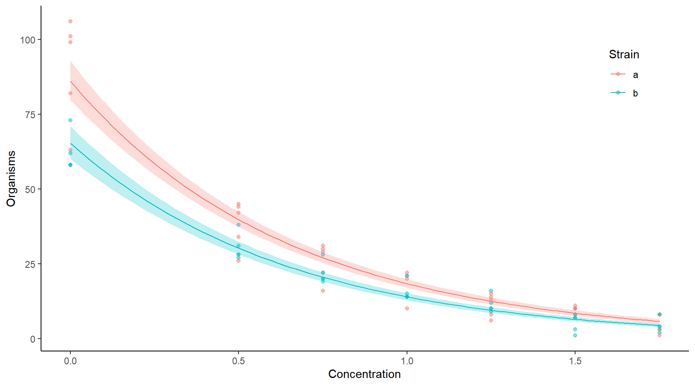
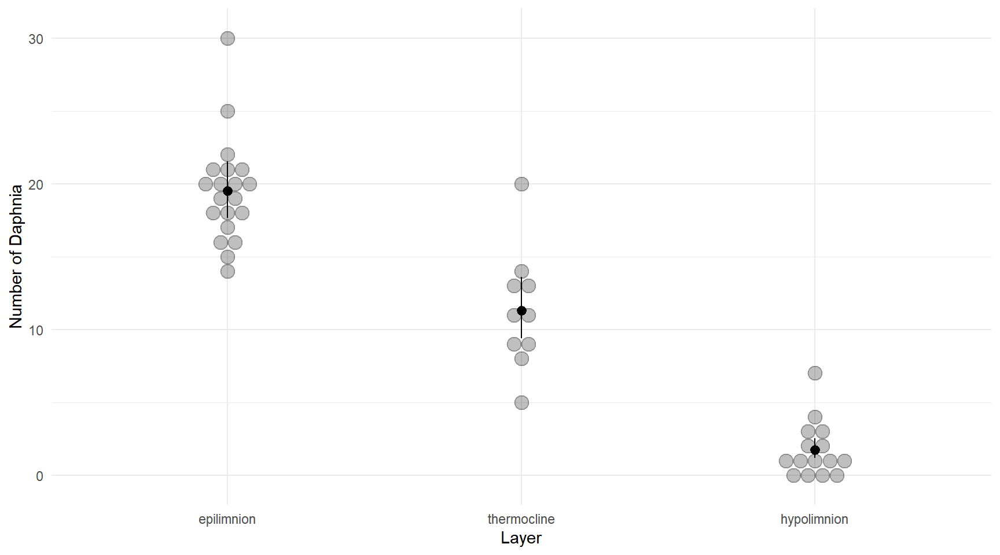

Monday, Feb 28
You can also download a PDF copy of this lecture.
Modeling Counts
Example: Consider the following data.
library(trtools) # for ceriodaphniastrain data
ceriodaphniastrain$strainf <- factor(ceriodaphniastrain$strain,
levels = c(1,2), labels = c("a","b"))
head(ceriodaphniastrain) count concentration strain strainf
1 82 0 1 a
2 58 0 2 b
3 106 0 1 a
4 58 0 2 b
5 63 0 1 a
6 62 0 2 btail(ceriodaphniastrain) count concentration strain strainf
65 3 1.75 1 a
66 2 1.75 2 b
67 8 1.75 1 a
68 8 1.75 2 b
69 1 1.75 1 a
70 4 1.75 2 bp <- ggplot(ceriodaphniastrain, aes(x = concentration, y = count, color = strainf)) +
geom_point(alpha = 0.5) + theme_classic() +
theme(legend.position = c(0.9, 0.8)) +
labs(x = "Concentration", y = "Organisms", color = "Strain")
plot(p)
What are the complications when the response variable is a count?
Nonlinear models may be necessary because \(E(Y_i) > 0\).
Heteroscedasticity because \(\text{Var}(Y_i)\) tends to increase with \(E(Y_i)\).
Non-normal discrete distribution.
One solution would be to use a nonlinear regression model combined with some method to account for the heteroscedasticity, and we will revisit this approach, but for now we will consider instead a specialized model that assumes a Poisson rather than a normal distribution of \(Y_i\).
Poisson Regression
A random variable \(Y\) has a Poisson distribution if \[ P(Y = y) = \frac{\lambda^y e^{-\lambda}}{y!}, \] where \(y\) is a non-negative integer (i.e., \(y = 0, 1, 2, \dots\)) and \(\lambda > 0\) is the parameter of the distribution. Also note that \(y!\) is the factorial of \(y\), defined as \(y! = y \times (y - 1) \times (y - 2) \times \cdots \times 2 \times 1\) and \(0! = 1\).
It can be shown that if \(Y\) has a
Poisson distribution then \(E(Y) =
\lambda\) and \(\text{Var}(Y) =
\lambda\). The parameter \(\lambda\) is sometimes called a “rate”
parameter.
 A regression model can be specified for a response variable with a
Poisson distribution by assuming that \[
P(Y_i = y) = \frac{\lambda_i^y e^{-\lambda_i}}{y!}
\] where \(\lambda_i\) is a
function of \(x_{i1}, x_{i2}, \dots,
x_{ik}\). Since \(\lambda_i >
0\) we might use \[
\lambda_i = \exp(\beta_0 + \beta_1x_{i1} + \beta_2x_{i2} + \cdots +
\beta_kx_{ik}).
\] This implies the nonlinear regression model \[
E(Y_i) = \exp(\beta_0 + \beta_1x_{i1} + \beta_2x_{i2} + \cdots +
\beta_kx_{ik}),
\] which can also be written as \[
\log E(Y_i) = \beta_0 + \beta_1x_{i1} + \beta_2x_{i2} + \cdots +
\beta_kx_{ik}.
\] This kind of model is sometimes called a log-linear
model. And because \(\text{Var}(Y_i) =
E(Y_i)\) the model assumes a certain pattern of
heteroscedasticity. This kind of regression model is called a
Poisson regression model.
A regression model can be specified for a response variable with a
Poisson distribution by assuming that \[
P(Y_i = y) = \frac{\lambda_i^y e^{-\lambda_i}}{y!}
\] where \(\lambda_i\) is a
function of \(x_{i1}, x_{i2}, \dots,
x_{ik}\). Since \(\lambda_i >
0\) we might use \[
\lambda_i = \exp(\beta_0 + \beta_1x_{i1} + \beta_2x_{i2} + \cdots +
\beta_kx_{ik}).
\] This implies the nonlinear regression model \[
E(Y_i) = \exp(\beta_0 + \beta_1x_{i1} + \beta_2x_{i2} + \cdots +
\beta_kx_{ik}),
\] which can also be written as \[
\log E(Y_i) = \beta_0 + \beta_1x_{i1} + \beta_2x_{i2} + \cdots +
\beta_kx_{ik}.
\] This kind of model is sometimes called a log-linear
model. And because \(\text{Var}(Y_i) =
E(Y_i)\) the model assumes a certain pattern of
heteroscedasticity. This kind of regression model is called a
Poisson regression model.
Generalized Linear Models
Poisson regression is a member of a family of models known as generalized linear models (GLM). A generalized linear model has the form \[ g[E(Y_i)] = \underbrace{\beta_0 + \beta_1 x_{i1} + \beta_1 x_{i2} + \cdots + \beta_k x_{ik}}_{\eta_i} \] where \(g\) is the link function and \(\eta_i\) is the linear predictor or systematic component. The link function is invertable so that we can also write \[ E(Y_i) = g^{-1}(\underbrace{\beta_0 + \beta_1 x_{i1} + \beta_1 x_{i2} + \cdots + \beta_k x_{ik}}_{\eta_i}) = g^{-1}(\eta_i). \] Example: A linear regression model can be written as \[ E(Y_i) = \beta_0 + \beta_1 x_{i1} + \beta_1 x_{i2} + \cdots + \beta_k x_{ik}, \] which implies that the link function is the “identity” function \(g(u) = u\), and thus so is the inverse link function \(g^{-1}(v) = v\).
Example: A Poisson regression model can be written as \[ \log E(Y_i) = \beta_0 + \beta_1 x_{i1} + \beta_1 x_{i2} + \cdots + \beta_k x_{ik}, \] so the link function is \(g(u) = \log(u)\), and the inverse link funtion is the exponential function \(g^{-1}(v) = \exp(v)\), also written as \(e^v\).
In a GLM the variance of \(Y_i\) is \[ \text{Var}(Y_i) = \phi V[E(Y_i)] \] where \(\phi\) is a dispersion parameter and \(V\) is the variance function. That is, the variance of \(Y_i\) is proportional to some function of \(E(Y_i)\).
Example: Linear models typically assume homoscedasticity meaning that \(\text{Var}(Y_i) = \sigma^2\) is a constant. Here the dispersion parameter is \(\phi = \sigma^2\), and the variance function is just \(V[E(Y_i)] = 1\).
Example: In Poisson regression we have that \(\text{Var}(Y_i) = E(Y_i)\). Here the dispersion parameter is \(\phi = 1\), and the variance function is the identity function \(V[E(Y_i)] = E(Y_i)\).
We can write a GLM concisely as \[\begin{align} E(Y_i) & = g^{-1}(\eta_i), \\ \text{Var}(Y_i) & = \phi V[g^{-1}(\eta_i)], \end{align}\] where again \[ \eta_i = \beta_0 + \beta_1x_{i1} + \cdots + \beta_kx_{ik}, \] to define the mean structure and a variance structure for \(Y_i\), respectively. In general, specification of a GLM involves specifying three component parts:
- The linear predictor \(\eta_i = \beta_0 + \beta_1x_{i1} + \cdots + \beta_kx_{ik}\).
- The link function \(g\) to relate \(E(Y_i)\) to \(\eta_i\) as \(g[E(Y_i)] = \eta_i\).
- The distribution of \(Y_i\), or the variance structure \(\phi V[g^{-1}(\eta_i)]\).
The choice of distribution implies a certain variance structure when
using glm. The distribution comes from a family of
distributions known as the exponential family (not to be
confused with what is called an exponential distribution).
Example: Normal linear regression is a GLM where \(g(u) = u\), \(g^{-1}(v) = v\), \(\phi = \sigma^2\), and \(V(u) = 1\) so that \[\begin{align} E(Y_i) & = \eta_i, \\ \text{Var}(Y_i) & = \sigma^2. \end{align}\]
Example: Poisson regression is a GLM where \(g(u) = \log(u)\), \(g^{-1}(v) = e^v\), \(\phi = 1\), and \(V(u) = u\) so that \[\begin{align} \log[E(Y_i)] & = \eta_i, \\ \text{Var}(Y_i) & = \exp(\eta_i). \end{align}\]
In R the function glm can be used to specify a
generalized linear model.
Example: Recall the model for the
whiteside data.
library(MASS)
m <- lm(Gas ~ Insul + Temp + Insul:Temp, data = whiteside)
summary(m)$coefficients Estimate Std. Error t value Pr(>|t|)
(Intercept) 6.8538 0.13596 50.409 7.997e-46
InsulAfter -2.1300 0.18009 -11.827 2.316e-16
Temp -0.3932 0.02249 -17.487 1.976e-23
InsulAfter:Temp 0.1153 0.03211 3.591 7.307e-04m <- glm(Gas ~ Insul + Temp + Insul:Temp, data = whiteside,
family = gaussian(link = identity))
summary(m)$coefficients Estimate Std. Error t value Pr(>|t|)
(Intercept) 6.8538 0.13596 50.409 7.997e-46
InsulAfter -2.1300 0.18009 -11.827 2.316e-16
Temp -0.3932 0.02249 -17.487 1.976e-23
InsulAfter:Temp 0.1153 0.03211 3.591 7.307e-04Note that we do not explicitly state the variance structure (although we could — more on that later). Here the variance structure is implied by the choice of distribution.
Example: Now consider the following Poisson
regression model for the ceriodaphniastrain data.
m <- glm(count ~ concentration + strainf, data = ceriodaphniastrain,
family = poisson(link = log))
summary(m)$coefficients Estimate Std. Error z value Pr(>|z|)
(Intercept) 4.455 0.03914 113.819 0.000e+00
concentration -1.543 0.04660 -33.111 2.057e-240
strainfb -0.275 0.04837 -5.684 1.313e-08This model can be written as \[ E(Y_i) = \exp(\beta_0 + \beta_1 x_{i1} + \beta_2 x_{i2}), \] or \[ \log E(Y_i) = \beta_0 + \beta_1 x_{i1} + \beta_2 x_{i2} \] where \(x_{i1}\) is the concentration for the \(i\)-th observation, and \(x_{i2}\) is an indicator variable for strain such that \[ x_{i2} = \begin{cases} 1, & \text{if the strain is b}, \\ 0, & \text{otherwise}, \end{cases} \] so that the model can be written case-wise as \[ \log E(Y_i) = \begin{cases} \beta_0 + \beta_1 c_i, & \text{if the strain is a}, \\ \beta_0 + \beta_2 + \beta_1 c_i, & \text{if the strain is b}, \end{cases} \] or \[ E(Y_i) = \begin{cases} \exp(\beta_0 + \beta_1 c_i), & \text{if the strain is a}, \\ \exp(\beta_0 + \beta_2 + \beta_1 c_i), & \text{if the strain is b}, \end{cases} \] if we let \(c_i = x_{i1}\) denote the concentration for the \(i\)-th observation. Also note that because \(Y_i\) is assumed to have a Poisson distribution, \(\text{Var}(Y_i) = E(Y_i)\).
Example: Recall the daphnia survey.
library(trtools) # for daphniastrat
library(ggplot2)
p <- ggplot(daphniastrat, aes(x = layer, y = count)) +
geom_dotplot(binaxis = "y", binwidth = 1, stackdir = "center") +
labs(x = "Layer", y = "Number of Daphnia") + theme_minimal()
plot(p) A Poisson regression model for these data might be specified as follows.
m <- glm(count ~ layer, family = poisson(link = log), data = daphniastrat)
summary(m)$coefficients Estimate Std. Error z value Pr(>|z|)
(Intercept) 2.9704 0.05064 58.661 0.000e+00
layerthermocline -0.5456 0.10683 -5.107 3.272e-07
layerhypolimnion -2.4204 0.20255 -11.950 6.519e-33So the model is \(\log E(Y_i) = \beta_0 + \beta_1 x_{i1} + \beta_2 x_{i2}\), where \(Y_i\) is the \(i\)-th count, and \(x_{i1}\) and \(x_{i2}\) are defined as \[ x_{i1} = \begin{cases} 1, & \text{if the $i$-th observation is from the thermocline layer,} \\ 0, & \text{otherwise}, \\ \end{cases} \] and \[ x_{i2} = \begin{cases} 1, & \text{if the $i$-th observation is from the hypolimnion layer,} \\ 0, & \text{otherwise}. \\ \end{cases} \] So the model can be written case-wise as \[ \log E(Y_i) = \begin{cases} \beta_0, & \text{if the $i$-th observation is from the epilimnion layer}, \\ \beta_0 + \beta_1, & \text{if the $i$-th observation is from the thermocline layer}, \\ \beta_0 + \beta_2, & \text{if the $i$-th observation is from the hypolimnion layer}, \end{cases} \] or \[ E(Y_i) = \begin{cases} \exp(\beta_0), & \text{if the $i$-th observation is from the epilimnion layer}, \\ \exp(\beta_0 + \beta_1), & \text{if the $i$-th observation is from the thermocline layer}, \\ \exp(\beta_0 + \beta_2), & \text{if the $i$-th observation is from the hypolimnion layer}. \end{cases} \] And of course we have that \(\text{Var}(Y_i) = E(Y_i)\).
Visualization of a GLM
Visualization of a GLM be done in the usual way provided we use the
type = response option when using predict. The
default, which is type = link, returns \(\hat\eta_i = \hat\beta_0 + \hat\beta_1x_{i1} +
\cdots + \hat\beta_kx_{ik}\) which is the estimate of \(\log E(Y_i)\).
m <- glm(count ~ concentration + strainf, data = ceriodaphniastrain,
family = poisson(link = log))
d <- expand.grid(concentration = seq(0, 1.75, length = 100), strainf = c("a","b"))
d$yhat <- predict(m, newdata = d, type = "response")
p <- ggplot(ceriodaphniastrain, aes(x = concentration, y = count, color = strainf)) +
geom_point(alpha = 0.5) + theme_classic() + geom_line(aes(y = yhat), data = d) +
theme(legend.position = c(0.9, 0.8)) +
labs(x = "Concentration", y = "Organisms", color = "Strain")
plot(p)
To compute confidence intervals for the expected response you can use
the glmint function from the trtools
package.
d <- expand.grid(concentration = seq(0, 1.75, length = 100), strainf = c("a","b"))
d <- cbind(d, glmint(m, newdata = d))
head(d) concentration strainf fit low upp
1 0.00000 a 86.03 79.67 92.88
2 0.01768 a 83.71 77.60 90.30
3 0.03535 a 81.46 75.58 87.79
4 0.05303 a 79.27 73.61 85.35
5 0.07071 a 77.13 71.69 82.99
6 0.08838 a 75.06 69.82 80.68p <- ggplot(ceriodaphniastrain, aes(x = concentration, y = count, color = strainf)) +
geom_point(alpha = 0.5) + theme_classic() +
geom_line(aes(y = fit), data = d) +
geom_ribbon(aes(ymin = low, ymax = upp, y = NULL, fill = strainf),
color = NA, alpha = 0.25, data = d) +
theme(legend.position = c(0.9, 0.8)) + guides(fill = FALSE) +
labs(x = "Concentration", y = "Organisms", color = "Strain")Warning: `guides(<scale> = FALSE)` is deprecated. Please use `guides(<scale> = "none")`
instead.plot(p)
We might visualize the model for the daphniastrat data as
follows.
m <- glm(count ~ layer, family = poisson(link = log), data = daphniastrat)
d <- data.frame(layer = unique(daphniastrat$layer))
d <- cbind(d, glmint(m, newdata = d))
p <- ggplot(daphniastrat, aes(x = layer, y = count)) +
geom_dotplot(binaxis = "y", binwidth = 1, stackdir = "center", alpha = 0.25) +
labs(x = "Layer", y = "Number of Daphnia") +
theme_minimal() + geom_pointrange(aes(y = fit, ymin = low, ymax = upp), data = d)
plot(p)
GLMs Versus Nonlinear Regression
There is a very close relationship between a GLM and a nonlinear
regression model. We can try to estimate the model above using
nlm as follows, using the estimates as starting values for
convenience.
m <- nls(count ~ exp(b0 + b1 * concentration + b2 * (strainf == "b")),
data = ceriodaphniastrain, start = list(b0 = 7, b1 = -2, b2 = 0.12))
summary(m)$coefficients Estimate Std. Error t value Pr(>|t|)
b0 4.4821 0.02894 154.86 2.486e-87
b1 -1.5679 0.06232 -25.16 7.441e-36
b2 -0.3267 0.04506 -7.25 5.402e-10The estimates are not the same. But consider that the GLM assumes that \[ \text{Var}(Y_i) = E(Y_i), \] so our weights should be \(w_i = 1/E(Y_i)\). Consider then an iteratively weighted least squares algorithm with \(w_i = 1/\hat{y}_i\).
ceriodaphniastrain$w <- 1
for (i in 1:10) {
m <- nls(count ~ exp(b0 + b1 * concentration + b2 * (strainf == "b")),
data = ceriodaphniastrain, start = list(b0 = 7, b1 = -2, b2 = 0.12),
weights = w)
ceriodaphniastrain$w <- 1 / predict(m, type = "response")
}
summary(m)$coefficients Estimate Std. Error t value Pr(>|t|)
b0 4.455 0.04272 104.273 7.167e-76
b1 -1.543 0.05087 -30.334 7.309e-41
b2 -0.275 0.05280 -5.208 1.988e-06Compare that with what we obtained using glm.
m <- glm(count ~ concentration + strainf, data = ceriodaphniastrain,
family = poisson(link = log))
summary(m)$coefficients Estimate Std. Error z value Pr(>|z|)
(Intercept) 4.455 0.03914 113.819 0.000e+00
concentration -1.543 0.04660 -33.111 2.057e-240
strainfb -0.275 0.04837 -5.684 1.313e-08The parameter estimates are the same, but the standard errors are not. Why? The GLM assumes \(\text{Var}(Y_i) = E(Y_i)\) whereas the iteratively weighted least squares approach assumes \(\text{Var}(Y_i) \propto E(Y_i)\).
GLMs Versus Response Variable Transformations
It is important to note that, for example, the GLM \[ \log E(Y_i) = \beta_0 + \beta_1x_{i1} + \beta_2x_{i2} + \cdots + \beta_kx_{ik}. \] is not equivalent to a linear model with a transformed response, \[ E[\log(Y_i)] = \beta_0 + \beta_1x_{i1} + \beta_2x_{i2} + \cdots + \beta_kx_{ik}, \] because \(\log[E(Y_i)] \neq E[\log(Y_i)]\) (although in practice they can produce similar results).